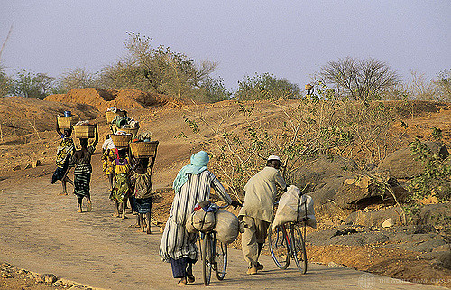
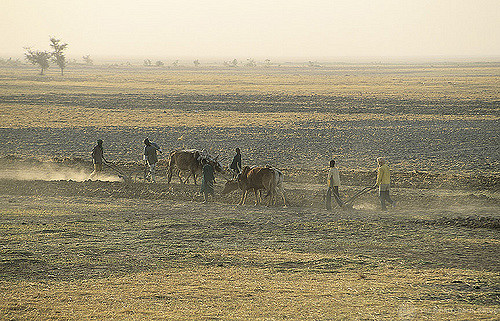
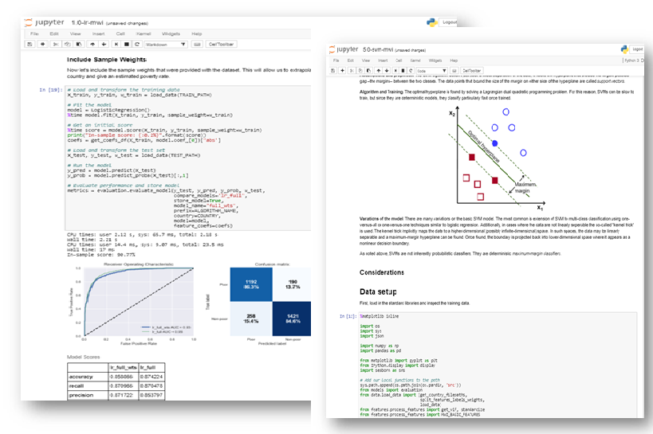

The social status of one’s parents is as influential today as it was 50 years ago in determining a person’s future, according to early findings from an upcoming World Bank report, Fair Progress? Educational Mobility Around the World.
Who are the poor?

Exploring the characteristics of the poor is key to a better understanding of the circumstances and contexts surrounding poverty. A large database of household surveys in 89 developing countries provides insights into this issue by facilitating a demographic profile of the poor at the US$1.90 poverty line. This poverty profile reveals that the global poor are predominantly rural, young, poorly educated, mostly employed in the agricultural sector, and live in larger households with more children. Indeed, 80 percent of the worldwide poor live in rural areas; 64 percent work in agriculture; 44 percent are 14 years old or younger; and 39 percent have no formal education at all, according to a World Bank Study
When looking at the incidence of Poverty across different population groups, poverty headcount ratios are more than three times higher among rural residents than among urban dwellers: 18.2 percent versus 5.5 percent, respectively. Agricultural workers are over four times more likely than people employed in other sectors of the economy to be poor. Educational attainment is inversely correlated with poverty. A small share of primary-school graduates are living in poverty: fewer than 8.0 percent of people who completed primary school, but not secondary school, are living below the US$1.90 poverty line. Among individuals who have attended university, the share is less than 1.5 percent. Similar differences are observed if poverty incidence is measured relative to the US$3.10-a-day poverty line
Age profiles confirm that children are more likely than adults to be poor. Children under 18 account for half the global poor in 2013, but less than a third of the sample population (32 percent). Younger children (ages 0–14) contribute especially heavily to the poverty headcount, much more than their share in the world’s population.
Why measuring poverty matters?
Development programs often target the poor and disadvantaged group of people. Reaching out large number of poor is a daunting task and requires research and identification of the section of people who are in most need. Multilateral institutes, international humnitarian agencies and local NGOs deploy various methods to select poverty stricken areas and the households. Most common such method is conducting household surveys and collect data on income and consumption expenditures. The task is then to compute a poverty income, measured at per capital level, based on the survey. This poverty income is computed in such a way that defines whether a household can maintain minimum consumption needs - both food and non-food consumption. The individual whose income or consumption falls below poverty line is considered poor.
Conventional approach is use of Household Survey
The global poverty headcount requires that the number of the poor within a country be measured by adding up the poor based on a welfare aggregate obtained through household surveys. In most countries, the aggregate of choice is per capita consumption. Indeed, 75 percent of the countries in the World Bank PovcalNet database— the official online repository of World Bank poverty data—use this aggregate. The countries in the database that use incomes are mostly high-income countries and Latin America and Caribbean countries.
Are these two aggregates—income and consumption—the same? They are not. Conceptually, income is a measure of the potential set of all goods and services that an individual or a household could obtain based on their purchasing power. Meanwhile, consumption represents a direct measure of the goods and services that the individual or household has actually obtained. Therefore, consumption does not capture opportunities, but realized outcomes that directly determine an individual or household’s well-being.
In practice, income is generally more volatile in the sense that it may be influenced greatly by seasonal factors or by a lack of regularity, particularly in agriculture and in the informal sector. It also has other important shortcomings, such as the frequent case of households that declare zero income on a survey, but exhibit a consumption level that is not zero. This may occur because the households lack income during a survey recall period, are dissaving, or are experiencing a spell of unemployment, or because the consumption of home produced goods has not been correctly measured.
In contrast, consumption does not normally vary as widely; it displays a much smoother behavior. For this reason, consumption tends to be the preferred aggregate in measuring poverty in developing economies, which typically depend more on agriculture and have a larger informal sector.
Despite these differences, both aggregates are used indistinctively in the measurement of the World Bank goals to maximize the number of countries monitored. Although this creates issues of comparability in the measurement of poverty, it allows the coverage of the global goals to be expanded. The distinction may be more problematic, however, in the analysis of inequality. This is a result of the fact that the coverage of household surveys is generally incomplete among top earners, entrepreneurial and capital incomes are inadequately reported, and measures of consumption often underestimate the living conditions of the rich.
Why not harnessing the power of machine learing in predicting poverty

Predicting poverty status of a household is a time consuming task. Often the multilateral institutes such as World Bank, UNDP, FAO as well as local non-government organizations and think tanks spend much of their effort to identify the poor household and draw on their profile - per capita income and demographic characteristics. Machine learning provides new scope to look at the task of identification of the poor differently.
I was a participant in a machine learning competition to predict poverty, sponsored by the World Bank. The competition was facilitated by DrivenData. I thought of creating a website featuring my machine learning work to predict poverty. This is the culmination of such efforts. The aim is to provide the readers glimpses of some out-of-the-box machine learning models and their performances in predicting poverty. In addition, I also created a interactive graph portraying relationship between growth in per capita income and poverty reduction.